Naše činnost
V Klubu malých kolejí se věnujeme nejen modelové železnici, ale i dalším aktivitám, které nás spojují s reálným světem železnice. Máme své vlastní klubové kolejiště pocházející z heřmanické věznice, na kterém postupně pracujeme a snažíme se jej zprovoznit tak, aby byly všechny okruhy sjízdné. Postupně vylepšujeme krajinu, aby kolejiště vypadalo co nejvěrněji. Není to jediné kolejiště, které u nás naleznete. Nedávno jsme dostali do správy jiné kolejiště, na kterém postupně provádíme opravy a učíme členy, jak elektricky takové kolejiště zapojit. Zkušenosti pak mohou využít na svých projektech.

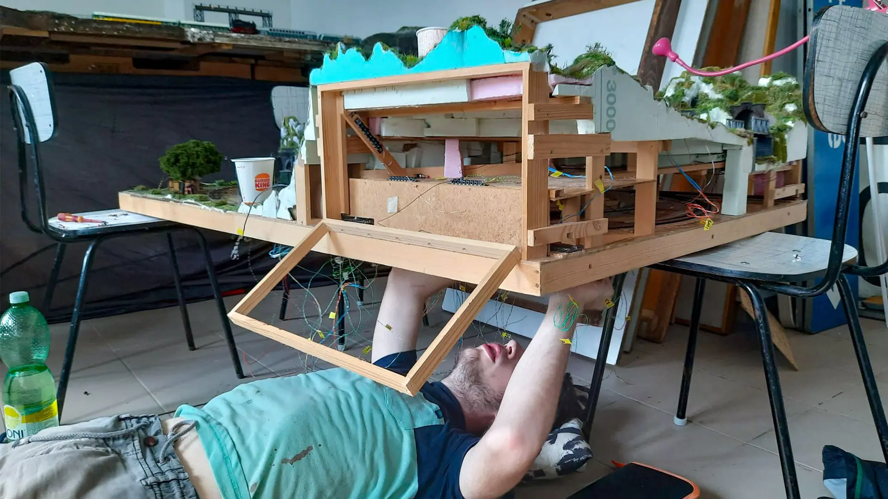

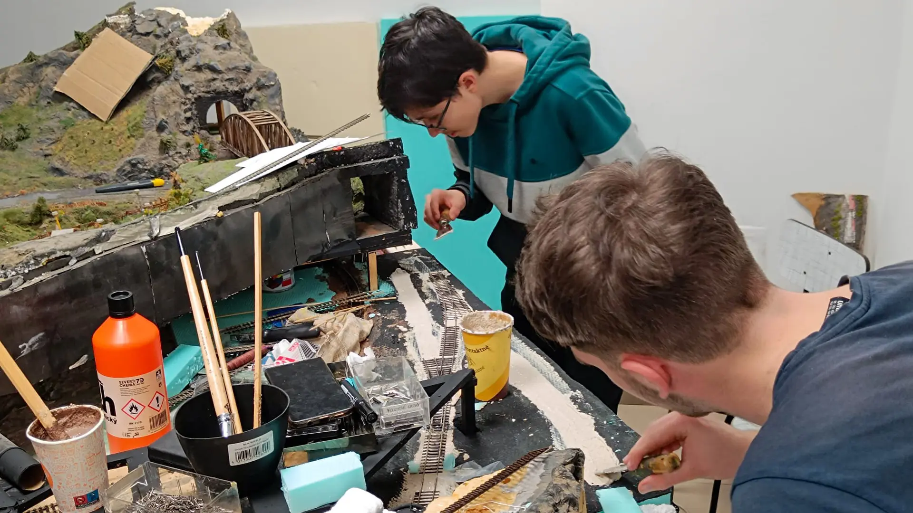

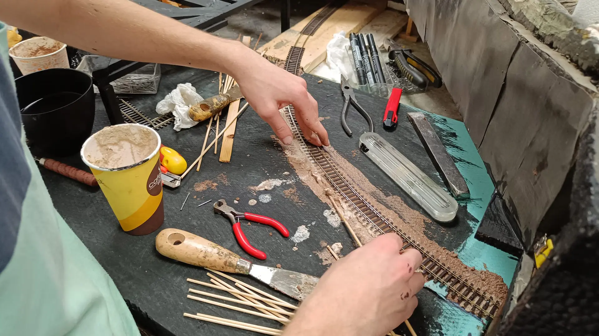

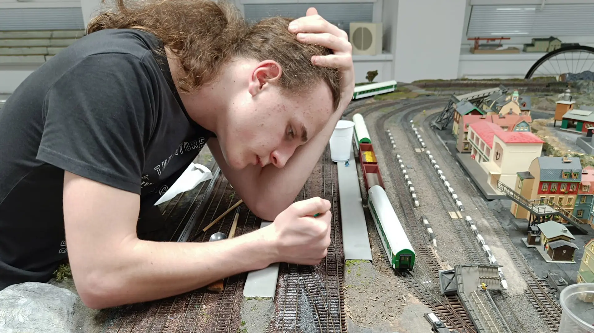

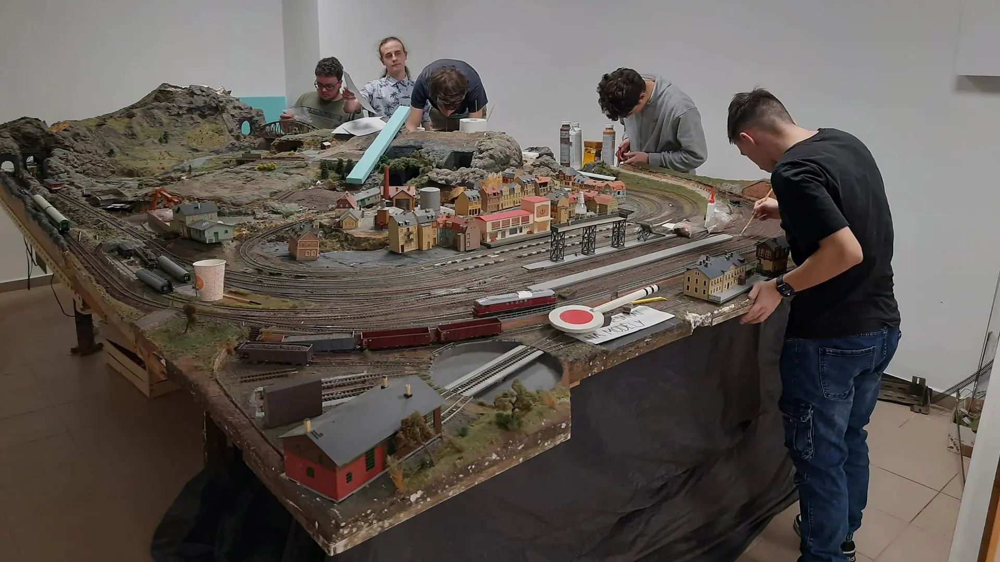
Věnujeme se postupnému zprovoznění některých železničních artefaktů. Pracujeme na zprovoznění železničních návěstidel a přejezdů. Rádi bychom, aby všechna návěstidla měla své ovládací pulty a mohli bychom s nimi případně cestovat na výstavy a podobné akce. Snažíme se dát do chodu i nástupištní tabuli Pragotron. Připravujeme se na akci "trenažér", pod kterou se skrývá plán na odkup pultu z lokomotivy a jeho postupné oživení tak, aby se pomocí něj dalo ovládat MSTS, Railworks nebo podobné simulační hry.

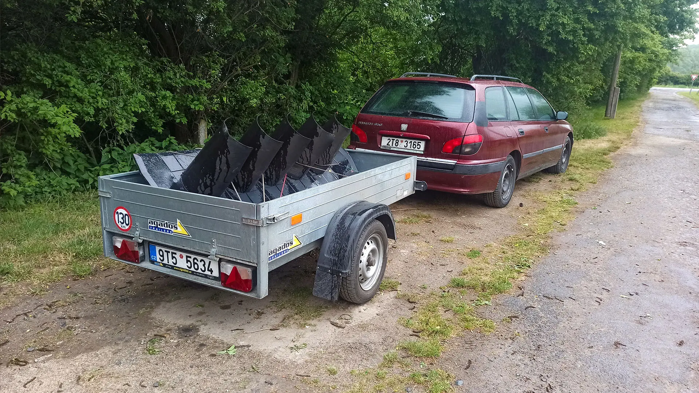

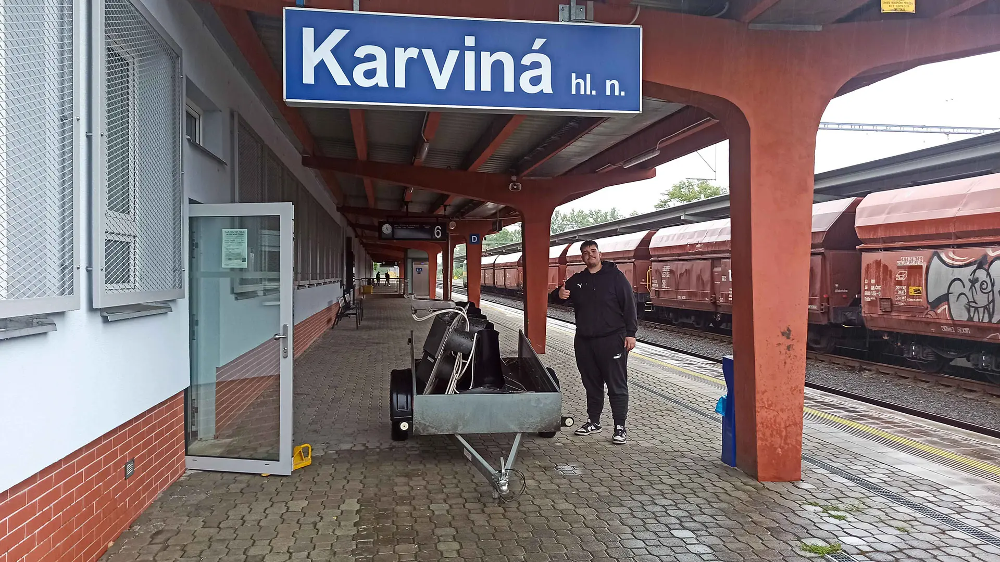

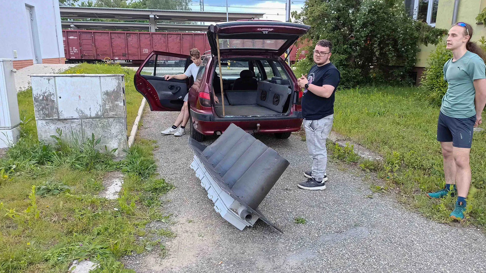

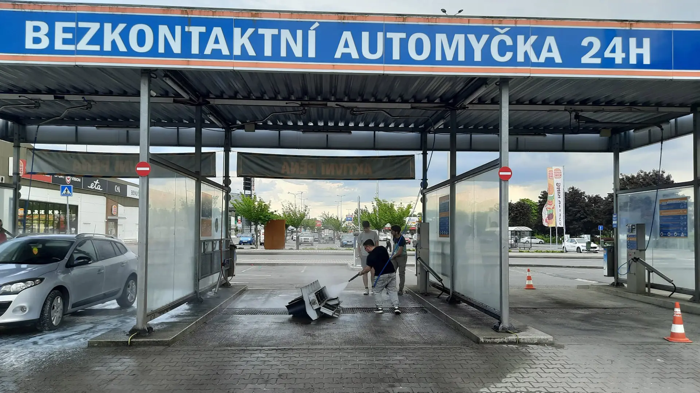

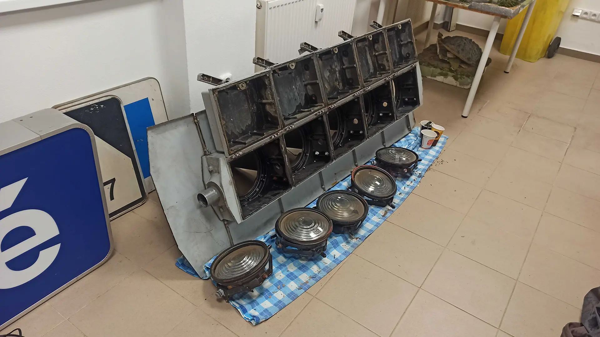
V neposlední řadě, jak se lze dočíst z historie, zachraňujeme důlní techniku, převážně lokomotivy a vozy. Na projektu spolupracujeme s důlní firmou OKD sídlící ve Stonavě, od které jsme dostali lokomotivu „Lízinku“ a několik důlních vozů. Pracujeme na jejich zprovozuschopnění a případném provozu. Rádi bychom vybudovali v okolí Karviné důstojné místo na památku dolů v okolí Karviné, hlavně pro důlní vozidla. Našim snem je vybudování krátké drážky pro dynamickou ukázku vozidel a vozit veřejnost vláčkem.

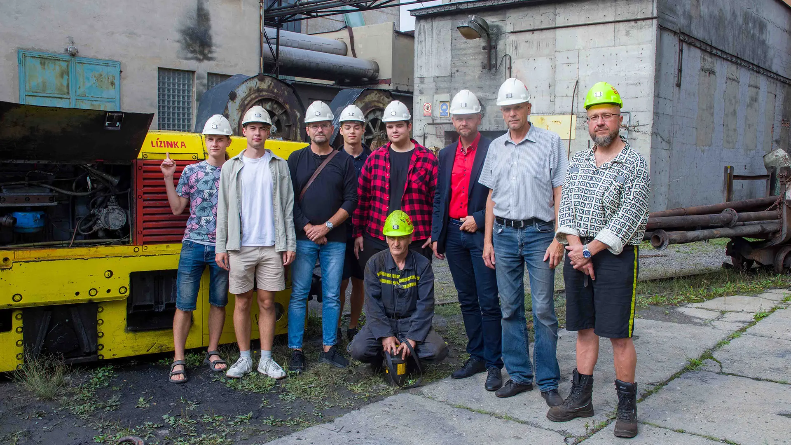

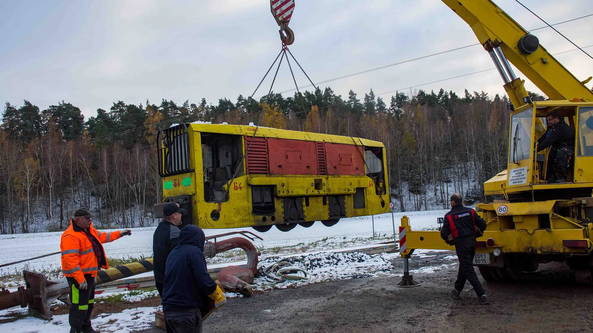

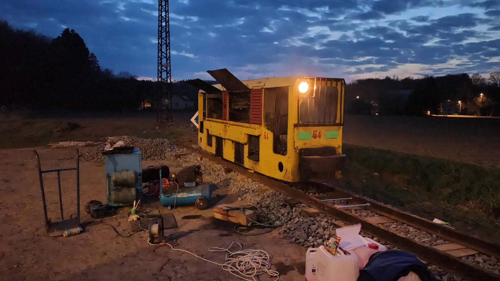

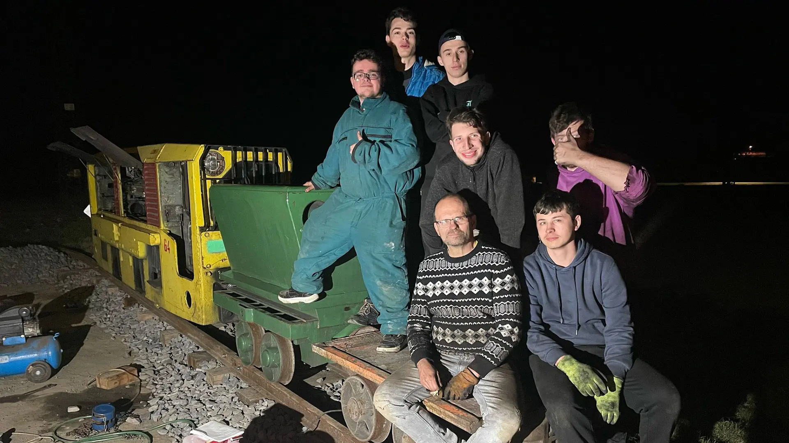

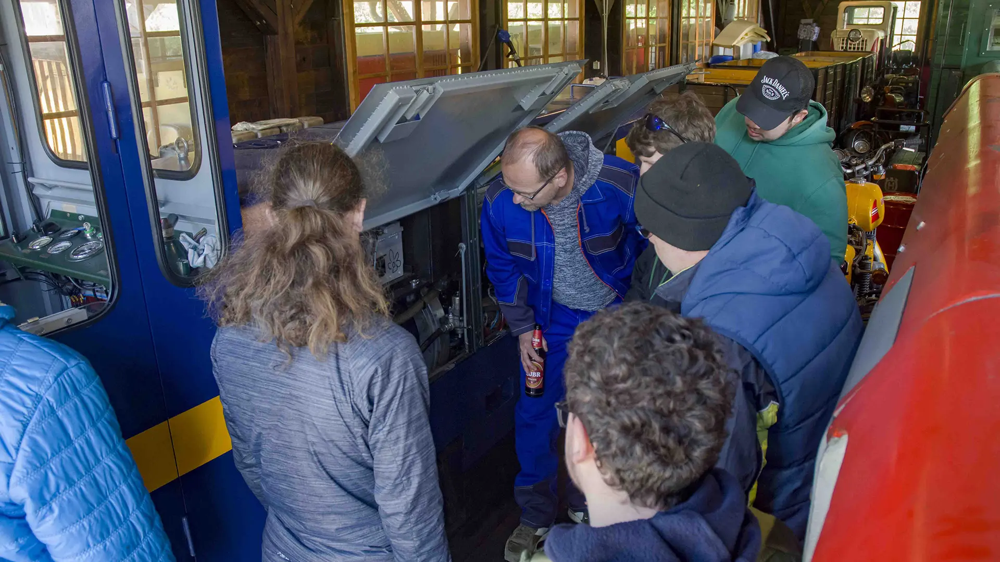